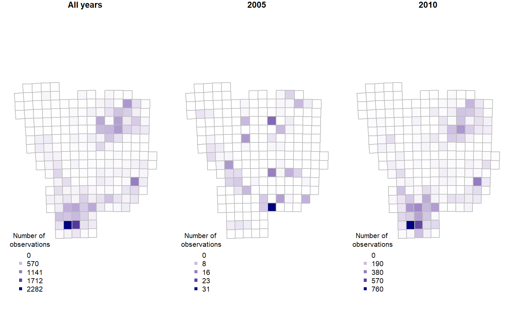
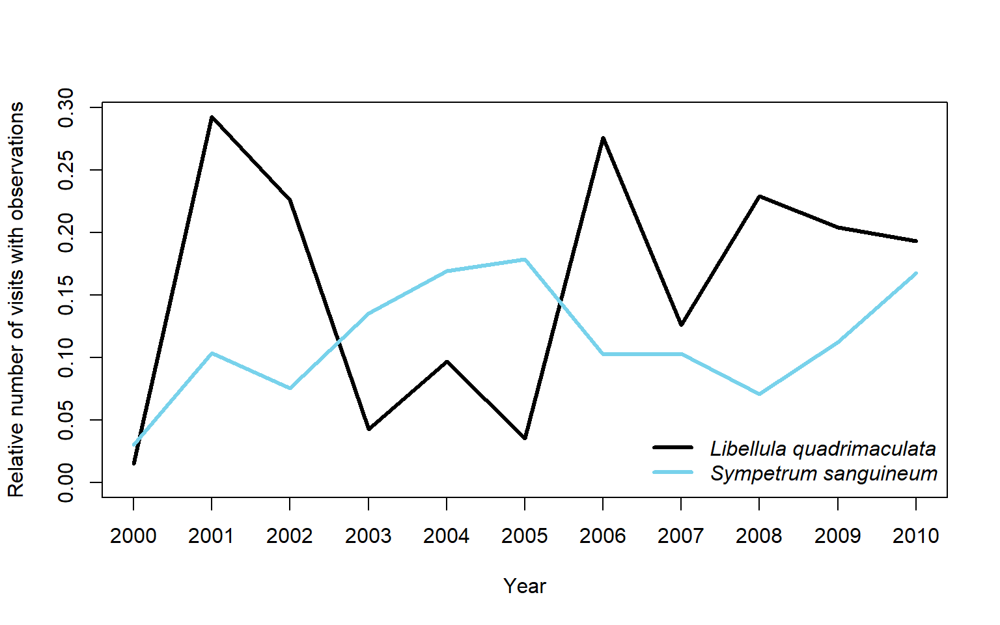

2 Example with opportunistic data on Dragonflies
In this example we are interested in exploring opportunistically collected data from the Swedish citizen science species observation portal - Artportalen.
2.1 Name searching
To begin with, we want be sure there is an unequivocal way to find the species within the order Odonata (dragonflies) and nothing else, so let’s search for “odonata”:
Now we can download the taxonomic data (note that the search is case-sensitive):
tx <- sbdi_call() |>
sbdi_identify("Odonata") |>
atlas_species() |>
select("taxon_concept_id", "species_name", "taxon_rank","order", "family","genus", "vernacular_name")You can save the tx object as the complete species list for later use.
2.2 Filter the search to get the observations
We start by searching for the data resource we are interested in using
the function pick_filter(). This is an interactive query guiding you
through the many resources available to filtering your query (data
resources, spatial layers, and curated species lists).
Follow the instructions. Your choices here would have been “in3” –> “dr5”.
Your variable fq_str will now contain a string “data_resource_uid:dr5”.
NOTE: the function pick_filter() is temporarily disabled until it could be adapted to the new galah framework.
We also want to filter spatially for Southern Sweden (Götaland).
Vector spatial layers (eg. polygons) can be imported in a number of
different ways. SBDI APIs take as search input polygons in the so-called
WKT Well Known Text
format. So the first step is to load a vector layer and transform it
into a WKT string. You could instead use the data we provided in the sbdi4r2 package data("swe").
data("swe",package = "sbdi4r2")
wGotaland <- swe$Counties$LnNamn %in% c("Blekinge", "Gotlands", "Hallands",
"Jönköpings", "Kalmar", "Kronobergs",
"Östergötlands", "Skåne", "Västra Götalands")
gotaland_c <- swe$Counties[wGotaland,]There are details about this polygon that we need to take care before. The WKT string should not be too long to be accepted by the API service. Also, the polygon we just got is projected in the coordinate system SWEREF99 TM, and the API service only accepts coordinates in a geodesic coordinate system WGS84. Let’s construct the WKT string:
# transform the CRS
gotaland_c <- st_transform(gotaland_c,
crs = st_crs(4326))
# disolve the counties into one polygon
gotaland <- st_union(gotaland_c)
# create a convex hull of the polygon to simplify the geometry and
# reduce the length of the WKT string
gotaland_ch <- st_convex_hull(gotaland)
# create WKT string
wkt <- st_as_text(gotaland_ch)The WKT string then looks like this:
## [1] "POLYGON ((11.13145 59.01184, 11.13161 58.90942, 11.25342 58.35786, 11.25893 58.34821, 12.81633 55.38594, 13.33575 55.34003, 14.19057 55.38557, 16.40805 56.20229, 18.30044 56.9528, 18.3725 57.00678, 18.86704 57.39753, 18.90037 57.44014, 19.3058 57.96888, 19.2889 57.99043, 15.79383 59.03876, 12.23104 59.27357, 12.06197 59.27159, 11.94833 59.26237, 11.82032 59.23553, 11.31566 59.11651, 11.21142 59.0897, 11.13145 59.01184))"
Next, we download the observations using the command sbdi_call(),
but this time using sbdi_geolocate() to pass the search area.
xf <- sbdi_call() |>
sbdi_identify("Odonata") |>
sbdi_geolocate(wkt, type = "polygon") |>
filter(dataResourceUid == "dr5",
year >= 2010, year <= 2020) |>
select(locality, recordedBy, taxonRank, group = "basic") |>
atlas_occurrences()## Request for 107107 occurrences placed in queue
## Current queue length: 1## ----## Downloading2.3 Quality and fit-for-use check
Before we can use the observation records we need to know if the observation effort (sampling effort) has varied over time and in space. We can approximate observation effort from the data by defining field visits i.e. occasions at which an observer has sampled observations. We reconstruct field visits (that is, assign each observation a visitUID) using using the package BIRDS. Additionally we want the data to be summarized over a grid of 25 km (provided through the sbdi4r2 package). The following functions will perform many different summaries at the same time. Please refer to the BIRDS package documentation for more detail.
OB <- organiseBirds(xf, sppCol = "scientificName" ,
# We only want observations identified at the species level
taxonRankCol = "taxonRank", taxonRank = "species",
# the visits are defined by collector and named locality
idCols = c("locality", "recordedBy"),
timeCols = "eventDate",
xyCols = c("decimalLongitude","decimalLatitude") )
# We don't need the whole grid, just the piece that overlaps our searching polygon
wInt <- unlist(st_intersects(gotaland, Sweden_Grid_25km_Wgs84))
gotaland_grid25 <- Sweden_Grid_25km_Wgs84[wInt,]
SB <- summariseBirds(OB, grid = gotaland_grid25, spillOver = "unique")Once summarised, we can see over space and for a few selected years how the number of observations is distributed:
maxC <- max(SB$spatial$nObs, na.rm = TRUE)
palBW <- leaflet::colorNumeric(c("white", "navyblue"),
c(0, maxC),
na.color = "transparent")
oldpar <- par()
par(mar = c(1,1,1,1), mfrow=c(1,3))
plot(SB$spatial$geometry, col=palBW(SB$spatial$nObs),
border = "grey", main="All years") ## with palette
legend("bottomleft", inset = c(0,0.05),
legend = round(seq(0, maxC, length.out = 5)),
col = palBW(seq(0, maxC, length.out = 5)),
title = "Number of \nobservations", pch = 15, bty="n")
## or export other combinations, e.g. one map per observed year
yearlySp <- exportBirds(SB,
dimension = "spatial",
timeRes = "yearly",
variable = "nObs",
method = "sum")
maxC <- max(yearlySp$'2010', na.rm = TRUE)
palBW <- leaflet::colorNumeric(c("white", "navyblue"),
c(0, maxC),
na.color = "transparent")
plot(yearlySp$geometry, col = palBW(yearlySp$'2010'),
border = "grey",main = "2010")
legend("bottomleft", inset = c(0,0.05),
legend = round(seq(0, maxC, length.out = 5)),
col = palBW(seq(0, maxC, length.out = 5)),
border = "grey",
title = "Number of \nobservations",
pch = 15, bty = "n")
maxC <- max(yearlySp$'2020', na.rm = TRUE)
palBW <- leaflet::colorNumeric(c("white", "navyblue"),
c(0, maxC),
na.color = "transparent")
plot(yearlySp$geometry, col = palBW(yearlySp$'2020'),
border = "grey",main = "2020")
legend("bottomleft", inset = c(0,0.05),
legend = round(seq(0, maxC, length.out = 5)),
col = palBW(seq(0, maxC, length.out = 5)),
border = "grey",
title = "Number of \nobservations", pch = 15, bty="n")
par(oldpar)
We now want to use the number of field visits as the measure for sampling effort. :
library(cowplot)
library(ggplot2)
library(colorRamps)
library(gridExtra)
vis <- ggplot(data = SB$spatial, aes( fill = nVis)) +
geom_sf() +
ggtitle("Visits") +
scale_fill_gradient(low = "#56B1F7",
high = "#132B43",
na.value = NA) +
theme(plot.margin = margin(1, 1, 1, 1, "pt")) +
theme_cowplot()
spp <- ggplot(data = SB$spatial, aes( fill = nSpp)) +
geom_sf() +
ggtitle("Number of species") +
scale_fill_gradient(low = "#56B1F7",
high = "#132B43",
na.value = NA) +
theme(plot.margin = margin(1, 1, 1, 1, "pt")) +
theme_cowplot()
grid.arrange(vis, spp, ncol = 2)
2.3.0.1 Temporal check
We see that SB contains an element called SB$temporal that contains
a daily time series with time-specific rows when there is information.
xts also supports day time, but dating below day resolution is not yet
implemented in the BIRDS package.
## nObs nVis nSpp
## 2010-03-22 3 3 2
## 2010-03-27 1 1 1
## 2010-04-02 2 1 2
## 2010-04-03 6 2 5
## 2010-04-12 7 6 2Sub-setting is convenient in xts as you can do it with its dates and
with a / for a range of dates.
## nObs nVis nSpp
## 2010-09-07 19 10 12## nObs nVis nSpp
## 2010-09-01 46 19 14
## 2010-09-02 28 14 12
## 2010-09-03 23 10 10
## 2010-09-04 56 18 18
## 2010-09-05 73 26 11
## 2010-09-06 16 4 9
## 2010-09-07 19 10 12
## 2010-09-08 13 6 8
## 2010-09-09 32 12 14
## 2010-09-10 2 2 1
## 2010-09-11 16 9 8
## 2010-09-12 20 10 8
## 2010-09-13 14 5 9
## 2010-09-15 3 3 2## nObs nVis nSpp
## 2010-09-01 46 19 14
## 2010-09-02 28 14 12
## 2010-09-03 23 10 10
## 2010-09-04 56 18 18
## 2010-09-05 73 26 11
## 2010-09-06 16 4 9
## 2010-09-07 19 10 12
## 2010-09-08 13 6 8
## 2010-09-09 32 12 14
## 2010-09-10 2 2 1
## 2010-09-11 16 9 8
## 2010-09-12 20 10 8
## 2010-09-13 14 5 9
## 2010-09-15 3 3 2
## 2010-09-17 3 2 3
## 2010-09-18 9 5 5
## 2010-09-19 12 7 5
## 2010-09-21 3 2 3
## 2010-09-22 4 4 2
## 2010-09-23 3 3 2
## 2010-09-24 10 5 5
## 2010-09-25 7 4 6
## 2010-09-26 7 6 2
## 2010-09-28 2 2 2
## 2010-09-29 5 3 4
## 2010-09-30 2 2 2The package xts has several tools for converting to different time
periods. Here we use apply.monthly to obtain the total number of
observations and visits per month. The plot command for an object of
calss xts provides a many features. This makes it fairly easy to
customize your plots. Read more in ?plot.xts.
library(xts)
obs.m <- apply.monthly(sb.xts$nObs, "sum", na.rm = TRUE)
vis.m <- apply.monthly(sb.xts$nVis, "sum", na.rm = TRUE)
plot(obs.m,
col = "darkblue",
grid.ticks.on = "month",
major.ticks = "year",
grid.col = "lightgrey",
main = "Total number of daily observations and visits per month")
lines(vis.m, col = "orange", lwd = 2, on = 1)2.4 Species trends
We can now look at some particular species and ask whether those have changed in occurrence over time:
## species nCells nObs nVis
## 1 Aeshna affinis 11 166 154
## 2 Aeshna caerulea 11 31 30
## 3 Aeshna cyanea 186 3930 3804
## 4 Aeshna grandis 197 6001 5896
## 5 Aeshna isoceles 42 475 469
## 6 Aeshna juncea 156 1302 1261
## 7 Aeshna mixta 145 2693 2618
## 8 Aeshna serrata 19 135 126
## 9 Aeshna subarctica 63 329 318
## 10 Aeshna viridis 59 225 194
## 11 Anax ephippiger 6 15 15
## 12 Anax imperator 103 2612 2470
## 13 Anax parthenope 31 276 272
## 14 Brachytron pratense 158 1668 1619
## 15 Calopteryx splendens 145 2419 2279
## 16 Calopteryx virgo 164 3742 3577
## 17 Coenagrion armatum 54 235 216
## 18 Coenagrion hastulatum 166 2532 2458
## 19 Coenagrion johanssoni 28 136 129
## 20 Coenagrion lunulatum 104 487 462
## 21 Coenagrion puella 179 3725 3567
## 22 Coenagrion pulchellum 177 3708 3586
## 23 Cordulegaster boltonii 113 1178 1164
## 24 Cordulia aenea 178 3579 3516
## 25 Crocothemis erythraea 2 13 13
## 26 Enallagma cyathigerum 193 5498 5190
## 27 Epitheca bimaculata 56 290 277
## 28 Erythromma najas 160 2438 2354
## 29 Erythromma viridulum 37 546 505
## 30 Gomphus vulgatissimus 99 770 752
## 31 Ischnura elegans 171 3586 3456
## 32 Ischnura pumilio 60 399 364
## 33 Lestes barbarus 3 43 39
## 34 Lestes dryas 90 614 584
## 35 Lestes sponsa 184 4699 4457
## 36 Lestes virens 90 683 651
## 37 Leucorrhinia albifrons 131 747 712
## 38 Leucorrhinia caudalis 116 464 444
## 39 Leucorrhinia dubia 129 1109 1078
## 40 Leucorrhinia pectoralis 140 1061 1035
## 41 Leucorrhinia rubicunda 153 1488 1442
## 42 Libellula depressa 174 2664 2574
## 43 Libellula fulva 24 293 268
## 44 Libellula quadrimaculata 198 6949 6837
## 45 Nehalennia speciosa 11 108 103
## 46 Onychogomphus forcipatus 100 937 919
## 47 Ophiogomphus cecilia 11 13 13
## 48 Orthetrum cancellatum 181 3806 3659
## 49 Orthetrum coerulescens 113 1069 1020
## 50 Platycnemis pennipes 128 1460 1404
## 51 Pyrrhosoma nymphula 169 3146 3074
## 52 Somatochlora arctica 61 192 180
## 53 Somatochlora flavomaculata 133 1065 1050
## 54 Somatochlora metallica 161 1718 1699
## 55 Sympecma fusca 106 860 839
## 56 Sympetrum danae 182 2998 2895
## 57 Sympetrum flaveolum 146 1012 980
## 58 Sympetrum fonscolombii 48 359 341
## 59 Sympetrum pedemontanum 2 143 127
## 60 Sympetrum sanguineum 189 4841 4644
## 61 Sympetrum striolatum 146 1468 1417
## 62 Sympetrum vulgatum 177 3431 3275We pick two species and compare their trends in number of visits where the species where reported, relative to the total number of visits.
library(dplyr)
sppCount <- obsData(OB) |>
group_by(year, visitUID) |>
summarise("focalCountLq" = sum(scientificName == "Libellula quadrimaculata"),
"focalCountSd" = sum(scientificName == "Sympetrum sanguineum"),
"sppLength" = length(unique(scientificName)),
.groups = "drop") |>
ungroup() |>
group_by(year) |>
summarise("focalCountLq" = sum(focalCountLq),
"focalCountSd" = sum(focalCountSd),
"nVis" = length(unique(visitUID)),
"relCountLq" = focalCountLq / nVis,
"relCountSd" = focalCountSd / nVis,
.groups = NULL)
oldpar <- par(no.readonly = TRUE)
plot(sppCount$year, sppCount$relCountLq,
type = "l", lwd = 3, xlab = "Year",
ylab = "Relative number of visits with observations",
ylim = c(0, max(sppCount$relCountLq)),
xaxp = c(2000, 2010, 10))
lines(sppCount$year, sppCount$relCountSd, lwd = 3, col = "#78D2EB")
legend("bottomright",
legend = c("Libellula quadrimaculata","Sympetrum sanguineum"),
text.font = 3, col = c("black", "#78D2EB"), lwd = 3, bty = "n")